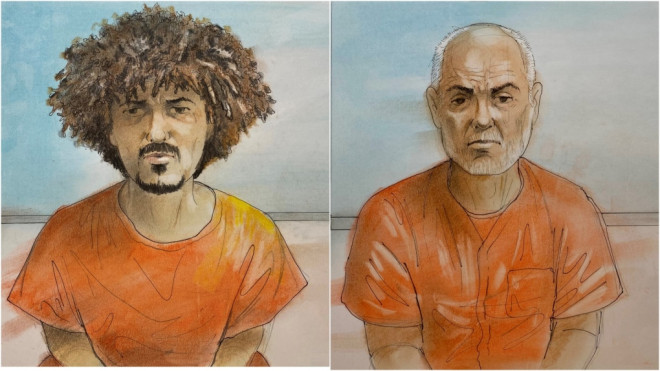

在渥太华召开紧急听证会之前，加拿大公共安全部长在周四表示，联邦政府正在内部审查一对父子的移民和安全筛查情况。这对父子最近被加拿大皇家骑警指控涉嫌挫败多伦多恐怖阴谋。

据CTV报道，“在这种情况下，移民局和公共安全局显然会审查……所有情况，特别是某些信息可能出现的时间和时间线，” 公共安全部长Dominic LeBlanc周三在记者就这一令人震惊的案件提出一系列尖锐问题时表示。
“这项工作正在进行中。”
上个月底，加拿大皇家骑警在安省列治文山逮捕了62岁的Ahmed Fouad Mostafa Eldidi和26岁的Mostafa Eldidi。警方最初表示，他们知道他们都是加拿大公民，并“正处于策划在多伦多进行严重暴力袭击的后期阶段。”
当时的报道显示，7月28日，警方在列治文山一间酒店逮捕了一对父子，他们正在策划在多伦多实施严重暴力袭击的行动阶段。骑警当晚在他们租住的酒店房间内逮捕了这对父子，据称他们当时已经获得了一把斧头和一把砍刀。
这对父子面临一系列与恐怖主义有关的指控，包括为伊斯兰国谋取利益、受其指使或与伊斯兰国联合策划谋杀。
虽然大多数指控都来自据称在加拿大进行的活动，但父亲还被指控于2015年6月在国外为恐怖组织谋取利益实施严重袭击。
上周，有媒体援引未具名消息人士的话说，父亲在海外参与伊斯兰国暴力活动后移民加拿大，而他的儿子不拥有加拿大国籍。
LeBlanc在记者会上回应说，渥太华皇家骑警和加拿大安全情报局的高级官员向他介绍了此事，暗示一些流传的信息“可能不可靠”。
两名男子于周三出庭。他们仍未聘请律师，保释听证会也推迟到下周。
听证会即将举行
在此前一天，联邦保守党呼吁下议院公共安全和国家安全委员会就这些人如何移民到加拿大举行听证会，并表示加拿大人“有权知道出了什么问题”。
保守党众议院领袖Andrew Scheer呼吁魁北克政团和新民主党支持其党派召回委员会的努力，新民主党周三表示同意，并确保能够召开紧急会议。
“有关安省恐怖主义阴谋的报道——幸好被加拿大皇家骑警挫败——让加拿大人担心一个社区侥幸免于一场可能致命的袭击，” 新民主党议员兼委员会成员Alistair MacGregor在一份声明中表示。
“一名涉嫌与外国恐怖组织有联系的男子不仅被允许进入加拿大，还获得了加拿大公民身份，这理所当然地令人不安。”
联邦新民主党同意议员应该“审查导致这两人来到加拿大并随后被捕的所有事态发展”。MacGregor还希望扩大听证会的范围，以涵盖其他问题，例如筛选程序如何允许伊朗伊斯兰共和国现任和前任官员入境。
“遗憾的是，自2015年以来，杜鲁多政府的移民系统记录惨淡，导致大量积压和处理时间延迟……而诚实的家庭在等待来加拿大期间与亲人分离多年，” MacGregor说。
“得知罪犯和与压迫性政治政权有关的个人能够自由入境，这简直是对他们最大的侮辱。”

保守党周四证实，两党正在推动召开特别会议，会议将于下周举行，“以解决这一令人震惊的国家安全失败问题”。
会议将要求勒布朗和移民部长Mark Miller以及相关部门和机构的高级官员出庭作证。
目前尚不清楚何时可以传唤部长和官员出庭作证，LeBlanc周三表示，联邦政府已经分享了目前可以分享的信息。
部长表示，他在“将来某个时候”还会透露更多消息，同时指出，他不想通过参与围绕该案件的政治对话“损害警方和检察官成功进行刑事审判的能力”。
“我认为加拿大人有权知道安全部门正在做重要的工作来保护他们……而这两个人目前正在监狱中面临严重的刑事指控，这一事实应该让加拿大人相信，加拿大皇家骑警及其合作伙伴在这起案件中做得很好，” LeBlanc说。